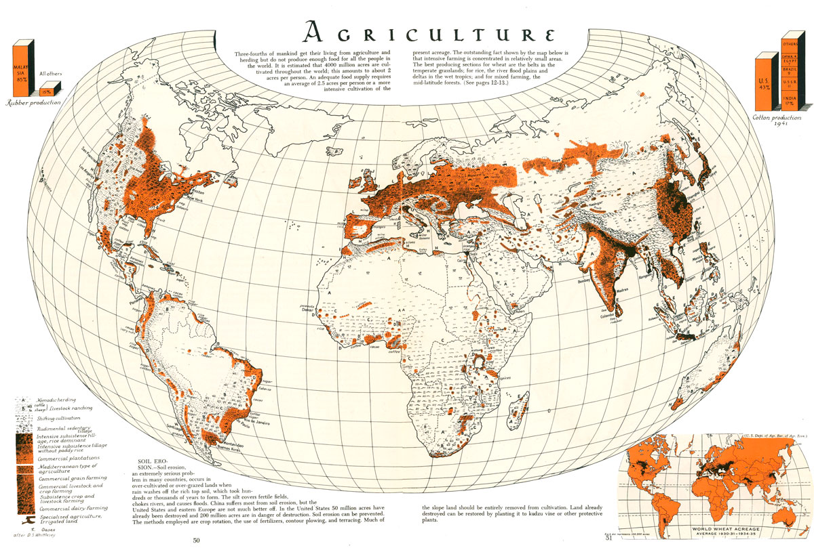

Link to high resolution version
Patterns of World Agriculture
Map authored by Erwin Raisz, 1944
This map of agricultural pattens is included in the Atlas of Global Geography written by Erwin Raisz. The book's jacket describes the atlas as an "entirely new kind of atlas - A beautiful and informative book of 'global' maps, giving a plane's-eye view of tomorrow's geography..." The image (and others) from the atlas can be found on the David Rumsey Map Collection.
This page was created by Greg Campbell-Cohen for New Maps Plus.
- See my projects on GitHub: Greg Campbell-Cohen
- Follow me on twitter: @gcampbellcohen
- Visit my LinkedIn